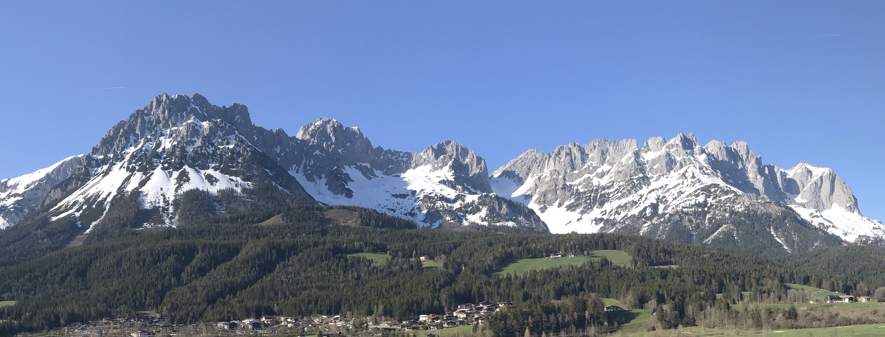
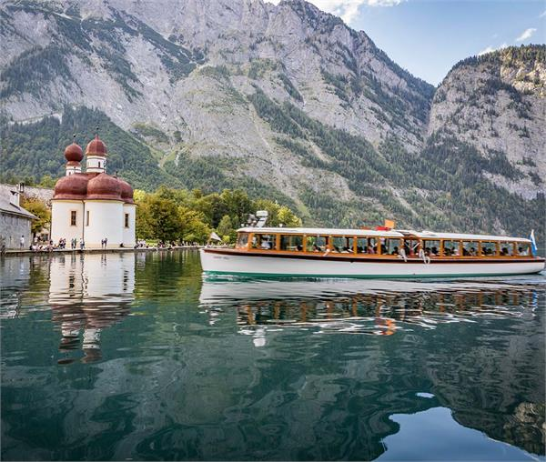
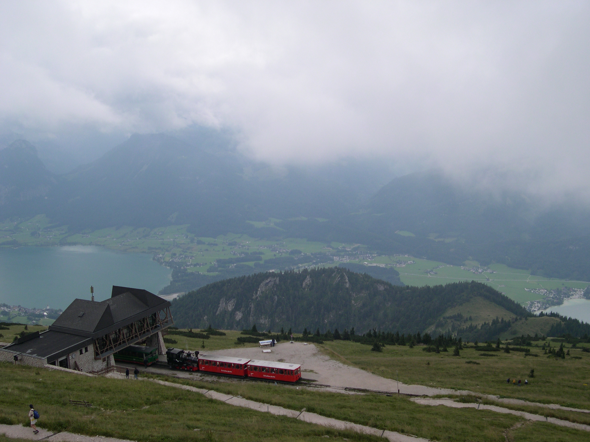

Discover nonstop from KEF; Delta DL131 nonstop to ATL; right side of the Alps.
Live fare audit · checked August 1, 2026
The Iceland
air-bridge.
Exact September flight snapshots for three ways to combine Reykjavík with Germany, Austria, Slovenia, or eastern Switzerland—priced in USD and tied to a dated flight.
01 / BOTTOM LINE
Best route decision
Use Munich as the default hinge.
It is the cleanest combination of route geography, a nonstop Iceland bridge, and a protected Delta nonstop home. Fly KEF → MUC on Friday, September 11, then return MUC → ATL on Saturday, September 19. That Saturday Delta return is $280 less than Friday in the one-way snapshot.
KEF → AMS nonstop on Sep 10 or 11, but Amsterdam pulls the trip away from the target region.
KEF → MXP nonstop Sep 10 on Wizz; useful for Dolomites/Slovenia, with bag fees to add.
MUC → ATL DL131 was $1,367 one-way, versus $1,647 on Sep 18.
02 / THREE TICKET SHAPES
The fare is only half the cost.
Backtracking can win on ticket price. Open-jaw wins on useful vacation time. These are different products, so the comparison keeps them separate.
Lowest verified package
ATL ↔ KEF + Europe round trip
$1,354/adult
Delta ATL ↔ KEF Sep 5–18 ($1,075) + KEF ↔ MXP Sep 11–17 ($279). Exact displayed fare floors; return-flight selection can alter the final quote.
- Best raw price in the tested set
- Forces a return to Iceland on Sep 17
- Consumes a day and adds another airport cycle
Recommended · now exact in miles
Delta open-jaw + one Europe hop
105,200 mi+ $139.13 / adult · Sep 5–18
Exact Delta Trip Summary: ATL → KEF on DL2398/DL246, then MUC → ATL on DL131, both Main Classic. Add the separately ticketed $360 nonstop KEF → MUC bridge.
- No retracing to Iceland
- Protects the nonstop home
- Delta showed 4 seats left at this award price
Useful benchmark, poor purchase
Three separate one-way tickets
$2,331/adult
ATL → KEF Delta ($604) + KEF → MUC Discover ($360) + MUC → ATL Delta Sep 19 ($1,367). Exact components, but transatlantic one-ways price badly.
- Maximum flexibility
- Clear benchmark for a Delta multi-city quote
- Not the recommended way to ticket the long-haul legs
03 / AIRPORT READ
Where each gateway actually fits.
Munich / MUC
Best overall. Ten weekly Icelandair frequencies in the published schedule, a Friday Discover nonstop in this fare search, and Delta DL131 nonstop home.
Frankfurt / FRA
Most schedule resilience near the route, but it starts too far north. Strong backup when MUC pricing fails—not the best trip shape.
Zürich / ZRH
Excellent for eastern Switzerland and Vorarlberg. Nonstop bridge available, daily Delta home, but one-way fares were higher and rental borders add friction.
Milan / MXP
Cheapest practical bridge and a Delta nonstop home. Best if the route shifts toward the Dolomites; less elegant for Salzkammergut and Bavaria.
Venice / VCE
Best for a Slovenia-heavy finish. Direct KEF service is only three times weekly and the Sep 11 nonstop priced at a steep $614 one-way.
Vienna / VIE
Good endpoint for an Austria-first route, weak air pairing: no nonstop KEF flight in the tested dates and no Delta nonstop to Atlanta.
Amsterdam / AMS
The fare escape hatch: $120 nonstop from KEF. Use only if savings justify repositioning far from the Alps or if the trip itself changes.
Copenhagen / CPH
High Iceland frequency and cheap bridge fares, but a poor geographic fit. Better as a backup hub than a starting point for this route.
04 / ICELAND → EUROPE NONSTOPS
One chart. Every direct option.
Exact one-way fare snapshots from Keflavík from September 10 through 15, so the cost of adding Iceland days is visible. Times are local; prices are USD per adult.
Cheapest$120 · Amsterdam
Extra Iceland sweet spot$240 · Zürich · Sep 13
Later Munich option$408 · Sep 13
Flights compared45 dated quotes
Destination
Date
Local time
Airline / flight
Duration
USD / adult
Each row is the lowest displayed nonstop one-way option retained for that airport/date combination, checked August 1, 2026. A baggage note appears where the displayed base fare excluded an overhead-bin bag. Click any price to reopen its dated search. No nonstop to Vienna or Geneva appeared during this window.
05 / MUNICH ROAD-TRIP TEST
Seven nights. Three bases. No wasted day.
This is the practical version of the route if the Friday, September 11 nonstop to Munich wins: Königssee first, four nights in the Salzkammergut, and a scenic return to MUC for Delta on September 18.

01MUCLand 7:00 AM
02Königssee2 nights
03SalzburgCity stop
04Gosau4 nights
05ChiemseeScenic return
06Freising / MUC1 night
Sleeping bases3Berchtesgaden · Gosau · Freising/MUC
Road distance~650–700 kmIncluding the local lake days
Longest transfer~2h 10mMUC → Berchtesgaden
Centerpiece4 nightsGosau / Salzkammergut
Why this shape works
The 7:00 AM Munich arrival becomes a real Königssee afternoon, not a “soft landing.” Gosau then keeps Hallstatt, Gosausee, Wolfgangsee and Schafberg within day-trip range without packing every morning. The airport-area final night protects the 10:25 AM Delta departure, but September 17 still includes Chiemsee and Freising.

DAYS 01–02 · SEP 11–12 · 2 NIGHTS
Königssee from the first afternoon.
The 7:00 AM arrival earns two real lake days: a boat or shoreline walk on Friday, then St. Bartholomä, Salet/Obersee and a weather-dependent mountain or valley choice on Saturday.
- Drive in
- MUC → Königssee · ~2h 10m · ~190 km
- Sleep
- Schönau am Königssee or Berchtesgaden
- With baby
- Use the carrier for uneven paths; boat departures run every 30 minutes in this date band.

DAY 03 · SUN SEP 13 · MOVE TO GOSAU
Salzburg as a stop, not another hotel.
Park once for Mirabell Gardens, the river, old-town lanes and fortress views. Then continue into the Salzkammergut and unpack for four nights at a Gosau farm stay.
- Drive
- Berchtesgaden → Salzburg ~40m; Salzburg → Gosau ~1h 15m
- Sleep
- Gosau · night 1 of 4
- Practical
- Make the grocery stop before reaching the farm apartment.

Waterfront first, then the funicular and Skywalk. The salt mine starts at age four, so adults would need to split if it remains a priority.
Gosau ↔ Hallstatt · ~20–25m each wayMap ↗
Easy shoreline, a picnic beneath the Dachstein and the Gosaukamm cable car only if the peaks are clear. This is the low-logistics centerpiece day.
Gosau ↔ Gosausee · ~10m each way · last cable-car descent 5:00 PM
DAY 06 · WED SEP 16 · FINAL GOSAU NIGHT
Ride above Wolfgangsee.
Reserve a SchafbergBahn time for the panorama, then come back down for a lake cruise, village walk or swim. It is the biggest-view day, held for the clearest forecast.
- Drive
- Gosau ↔ St. Wolfgang · ~45m each way
- Sleep
- Gosau · night 4 of 4
- With baby
- Prams cannot board the railway; use a carrier. Under-fours ride free without a separate seat.

DAY 07 · THU SEP 17
Chiemsee breaks up the road home.
Drive Gosau → Prien am Chiemsee in about 1h 45m for a lakeside lunch and promenade—or Herrenchiemsee if timing is generous—then continue about one hour to Freising/MUC. Return the car that evening if the hotel shuttle works.
~225 km total1 airport-area nightNo unused vacation day
Open scenic return ↗FRI · SEP 18Delta DL131 · MUC 10:25 AM → ATL 2:45 PMHotel to terminal ~10–20m · aim to be inside around 7:25 AM
Drive times are normal-condition planning estimates, rounded for decision-making. Add margin for Munich traffic, border-weekend traffic, parking and photo stops.
RENTAL CAR / QUICK BUDGET
Munich loop: the cleanest car contract.
Pick up and return at MUC from 9:00 AM September 11 to 7:00 AM September 18. A wagon or compact SUV is the useful comparison—not the absolute cheapest mini.
Price integrity
Rental sites did not expose a stable final September checkout total to the research crawler. The figures below are transparent planning ranges calculated from current KAYAK MUC category rates—not claimed exact quotes. Use the dated search buttons to refresh the live total before booking.
Example classObserved daily band7-day baseFit for this trip
Medium wagonSkoda Octavia Combi or similar
$43–$81/day
$301–$567Before coverage, seat, fuel and border option
Best luggage-to-cost balance for two adults, infant gear and farm-stay groceries.
Compact SUVAutomatic preferred
$55–$81/day
$385–$567Before coverage, seat, fuel and border option
Easier loading and a little more space; unnecessary for road conditions.
IF THE ICELAND HOP LANDS ELSEWHERE
One-way cars get expensive across borders.
These bands answer the route-choice question: what the car can add if the trip starts outside Munich but still finishes at MUC for Delta.
Car route7-day planning bandExtra vs MUC loopWhat it meansLive search
MUC → MUCGermany / Austria loop
$301–$567
Baseline
No one-way repositioning fee. Only the normal Austria cross-border/roaming option and vignette remain.
FRA → MUCDomestic German one-way
$350–$650
+$50–$125
The sane alternate. Europcar publishes a domestic one-way fee up to €45; the longer north-to-south route is the bigger vacation cost.
ZRH → MUCSwitzerland → Germany
$800–$1,100
+$350–$650
Zürich medium cars currently benchmark around $80–$99/day before an international one-way fee. Only worth it if the airfare or Swiss itinerary wins decisively.
Planning bands, not held quotes: international one-way fees are vehicle- and station-specific and generally appear only during booking. Sixt explicitly says the fee depends on distance/country and requires the foreign-use option; its German terms list Austria in the permitted nearby-country zone and add a weekly cross-border charge. Compare the full checkout total, not the headline daily rate.
Put these in every comparison
- Automatic transmission
- Infant seat
- Unlimited kilometres
- Austria cross-border permission
- Austrian motorway vignette
- Full-to-full fuel
- After-hours or 7:00 AM MUC return
- Cancellation until pickup
06 / FULL LIVE PRICE SHEET
Dated fares, not averages.
Structure / routeDate
Exact flightTiming
USD / adultSource
07 / MILES AUDIT
Two different meanings of “pay with miles.”
Delta’s dynamic Award Travel price and its fixed-value Pay with Miles card benefit are not interchangeable. The page only labels a number exact when the math is reproducible.
Exact Delta Award Travel · Sep 5–18
105,200 miles + $139.13
ATL → KEF: DL2398 + DL246, Sep 5, 7:18 PM–9:30 AM +1, 1 stop, 10h12. MUC → ATL: DL131, Sep 18, 10:25 AM–2:45 PM, nonstop, 10h20. Main Classic; one passenger.
Delta Trip Summary · 4 leftPay with Miles · eligible Delta Amex
5,000 miles = up to $50
For the verified $1,075 Delta ATL ↔ KEF fare, the efficient split is 105,000 miles + $25 per adult. For the $1,132 Sep 19 version, it is 110,000 miles + $32.
Exact fixed-rate comparisonTwo-adult lens
210,400 miles + $278.26
That is the exact two-adult total for the verified Delta multi-city award before the infant ticket. Add $720 cash for two adults on the $360 KEF → MUC bridge. Delta generally prices the international lap infant separately.
Infant not includedStatusVerified from Delta Trip Summary
Long-haul ticketATL → KEF / MUC → ATL
Travel datesSep 5 / Sep 18, 2026
CabinMain Classic
Per adult105,200 miles + $139.13
Inventory message4 left at this price
Still to be live-quoted in Delta before treating them as exact: Sep 19 from Munich, and the corresponding Zürich, Frankfurt, Vienna, Venice, and Milan multi-city awards. Cash rows below remain exact dated snapshots; they are not substitutes for these dynamic award prices.
08 / METHOD & SOURCES
What “verified” means here.
Every table row was pulled on August 1, 2026 in USD for the named 2026 date. It records the displayed fare, airline, flight number, time, stops, and duration. Google Flights links reopen the exact route/date query; airline schedule links validate that the route is planned for the season.
Important: fares remain live inventory. A round-trip search result shows an exact fare floor associated with the displayed outbound; the final return-flight choice can raise it. Low-cost rows marked “no overhead bin” need baggage added before comparing.